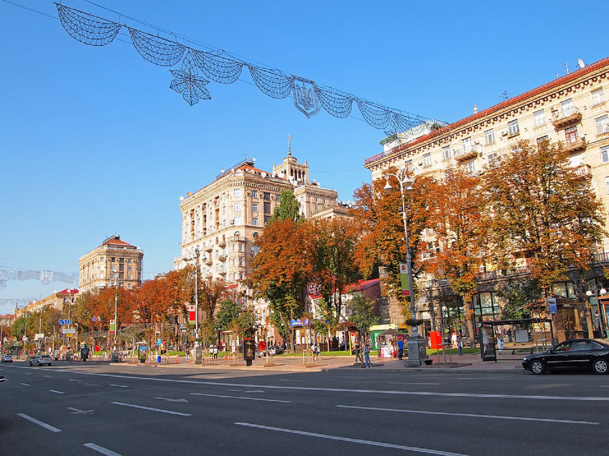

Вступ
Історія України, її культура, суспільство, міста, села та природа сповнені чудес і дивовижних фактів, про які самі українці іноді не знають. Дізнайтеся більше цікавих фактів про Україну, які вас точно здивують
Україна має багатовікову історію і за час свого існування країна пройшла багато етапів становлення, які закарбували характер та світосприйняття сучасних українців.
Крім цього, багата культурна спадщина та дивовижна природа, роблять Україну унікальною країною, яка приховує у собі незліченну кількість приголомшливих фактів. І підтверджують це тисячі іноземців, які приїздять познайомитись з Україною навіть під час війни.
Вражаючі факти про культуру та історію України
- Перша у світі конституція, в які окреслили права громадян та уряду, була розроблена та введена в дію у 1710 році українським гетьманом Пилипом Орликом. Для порівняння, конституція США, була розроблена і прийнята у 1787 році.
- Запорізька Січ — суспільно-політична та військово-адміністративна організація українського козацтва, що була заснована у 1553-1554 роках, сьогодні вважається одним з перших демократичних утворень у світі.
- З 12 лавр світу 4 знаходяться в Україні:12 лавр світу 4 знаходяться в Україні: це Києво-Печерська лавра (Київ, існує з 1051 року), Почаївська лавра (Почаїв, Тернопільської області, з 1833), Свято-Успенська Святогірська лавра (Святогірськ, Донецької області (отримала статус лаври у 2004 році) та Свято-Успенська Унівська лавра студійського уставу (Унів з 1898).
- Українські народні пісні стали підґрунтям для створення багатьох світових музичних шедеврів. Наприклад, композиція “Summertime” Джорджа Гершвіна була написана на основі української колискової “Ой, ходить сон коло вікон”, яку він почув у виконанні Національного хору України під керівництвом Олександра Кошица.
- Україна відмовилася від третього у світі (після США та рф) за величиною арсеналу ядерної зброї. У момент проголошення незалежності, на території України було розташовано більш як 1000 ядерних боєголовок і ракет.
- Найстародавніша у світі мапа, вибита на кістці мамонта, а також найстародавніше поселення Homo Sapiens знайдені в Україні, у селі Межиріччя Рівненської області. Їм 14,5-15 тисяч років.
- На території України знаходиться цивілізаційна колиска світу,старша за Єгипетські піраміди та Стоунхендж – комплекс Кам'яна могила у Запорізькій області.
Дивовижні факти про природу та ресурси України
- У 1929 році СРСР заявила, що на території України зосереджено близько 60% від усіх розвіданих запасів газу, після чого країна стала одним з найбільших експортерів блакитного палива у Європу на певний проміжок часу. А сьогодні Україна посідає 3 місце за кількістю розвіданих даних сланцевого газу в Європі, випереджають її тільки Польща та Франція.
- Україна має найбільші запаси марганцевої руди у світі - 2,3 млрд тонн, що становить близько 11% світових резервів. Крім цього, наша країна володіє 7% запасів залізної руди планети.
Але справжній скарб України - це її чорнозем, якого тут розташовано 25% світових запасів. Правильно оброблений чорнозем забезпечує чудовий урожай, і навіть під час Другої світової війни нацисти вивозили його поїздами, що ще раз підкреслює його неймовірну цінність.
- Українська печера “Оптимістична” – є найдовшою гіпсовою печерою у світіє найдовшою гіпсовою печерою у світі та другою за протяжністю після “Мамонтової печери” в США.
- Єдина у світі підводна річка знаходиться у Чорному морі. Якби вона була на суші, то займала б шосте місце за обсягами води, що переносить (22 тис. кубічних метрів на секунду).
- В Україні є свої Мальдіви – дивовижні пляжі з білим піском та прозорим блакитним морем. Знаходяться вони на понівеченому росією заповідному острові Джарилгач, що на Херсонщині. Зауважимо, що місцеві флора й фауна занесені до Червоної книги, а також тут раніше жили мустанги й верблюди.
Найцікавіші факти про українців
- Перша пісня, що прозвучала у космосі – "Дивлюсь я на небо та й думку гадаю", заспівав її український космонавт Павло Попович на кораблі “Восток-2” спеціально для конструктора космічних кораблів українця Сергія Корольова. Зауважимо, що навіть Ілон Маск, засновник SpaceX, назвав його одним з найкращих фахівців у галузі.
- Українець Юрій Кондратюк, розробив “теорію зупинки” на небесному тілі з сильним гравітаційним полем, яку успішно використали американці для висадки на Місяць.
- Українці – одна з найосвіченіших націй планети за кількістю громадян з вищою освітою.
- Під час англо-бурської війни (1899-1902) українець Юрій Будяк врятував від розстрілу молодого англійського журналіста, який пізніше став прем'єр-міністром Великобританії.
Цим журналістом був ніхто інший, як Вінстон Черчилль, і в подяку він допоміг Будяку вступити до Оксфордського університету. Юрій Будяк прожив героїчне життя, але загинув у 1943 році в радянському концтаборі.
Київ: потенційно найбільше місто Європи
До навали монголо-татар у 1240 році Київ був одним з найбільших міст Європи, перевершуючи за розмірами Лондон і Париж. У часи князя Ярослава Мудрого місто стало осередком дипломатичних і династичних зв'язків з європейськими королівськими родинами.
Київ був у 13 столітті у п'ятдесят разів більше за Лондон, у десять - за Париж. Його населення становило близько 50 000 мешканців. Щоб знов досягти таких демографічних показників, знадобилося близько 600 років.
Хрещатик - вулиця контрастів
Головна вулиця Києва, Хрещатик, дивує своїми масштабами: вона є водночас найширшою та найкоротшою головною вулицею серед світових столиць. Її загальна довжина становить лише 1,2 км, але ширина справді вражає.
Хрещатик - рекордсмен за шириною вулиці у столицях світу
Під час Другої світової війни вулиця була майже повністю зруйнована, але сьогодні вона є однією з найвизначніших пам'яток столиці.

Острозька академія - перший університет Східної Європи
Острозька академія, заснована в 1576 році князем Костянтином-Василем Острозьким, стала першим вищим навчальним закладом у Східній Європі. Це місце стало колискою наукової думки, де поєднувалися слов'янські, грецькі та латинські традиції.
Академія відіграла важливу роль у розвитку української культури та освіти, залишивши по собі неоціненний спадок.
АН-225 "Мрія" - летючий гігант
Знищений росією літак Ан-225 “Мрія” в аеропорті Гостомеля під Києвом на початку повномасштабного вторгнення, мав найбільшу вантажність у світі. До речі “Мрія” встановила 462 авіаційних рекорди, з них понад 240 – світові.
У 2001 році "Мрія" встановила світовий рекорд, перевізши вантаж вагою 235 тонн, встановивши за один політ 124 рекорди.